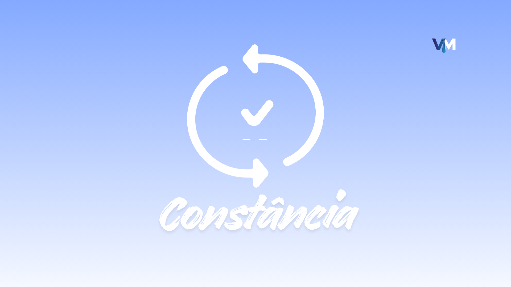
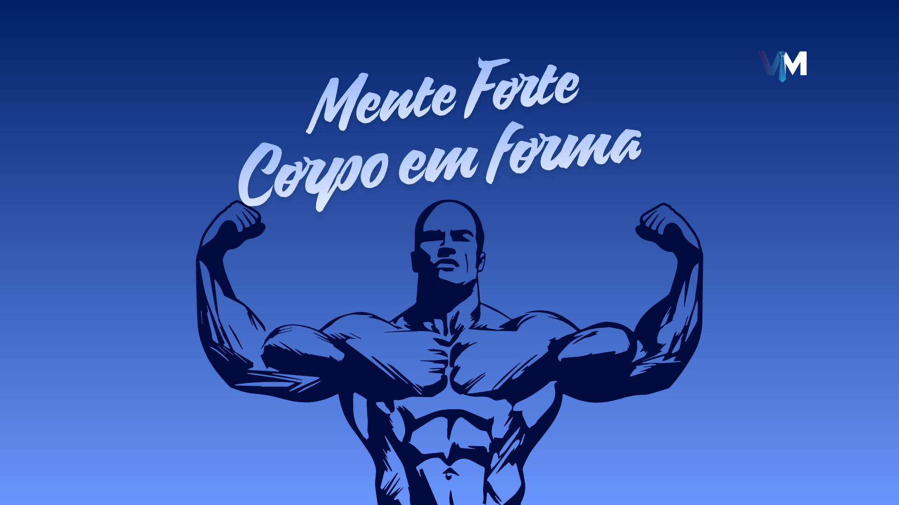
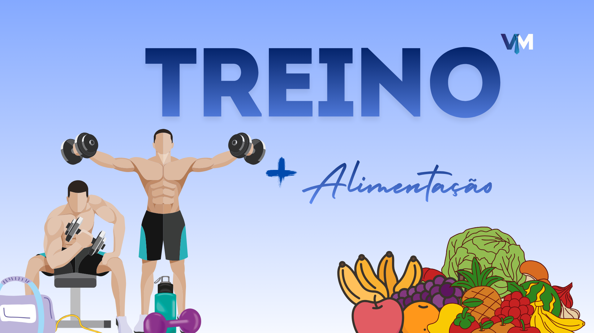
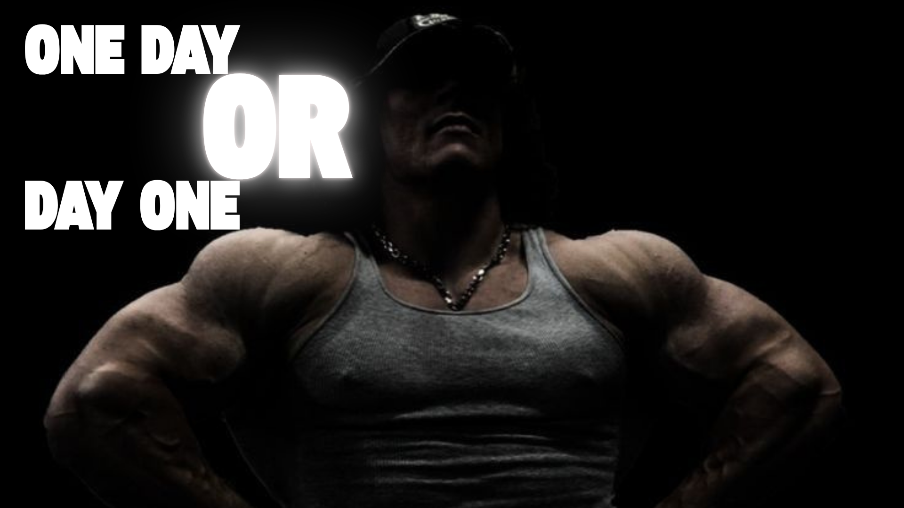
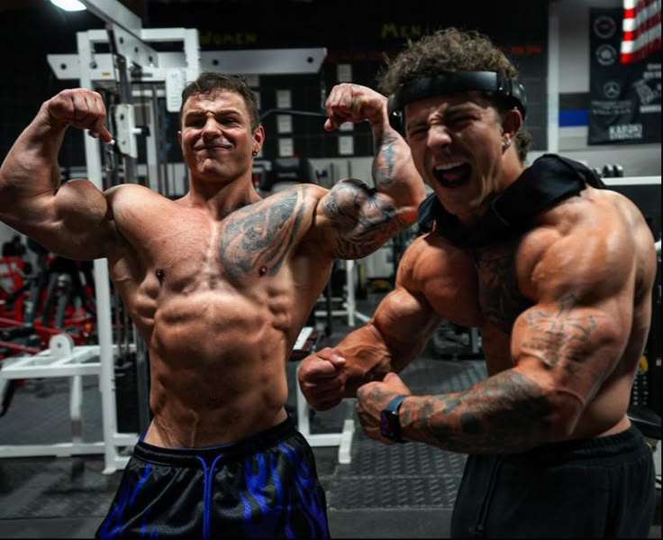
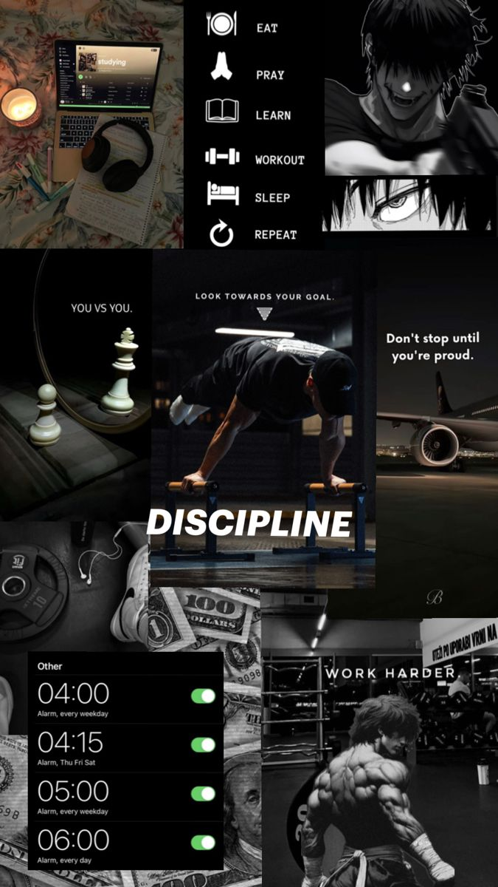

Constância é o Melhor Treino 🏋️♂️
Não existe resultado sem consistência. Criar o hábito é mais importante do que a intensidade inicial. Cada treino é uma vitória.
Transforme seu corpo, mente e espírito através da constância e disciplina.
Saiba Mais
O exercício físico transforma corpo e mente. Melhora o humor, reduz o
estresse, aumenta a energia, fortalece músculos e ossos, e turbina a
autoconfiança. Além disso, melhora o foco, a disciplina e a
resistência mental — virtudes que se refletem em todas as áreas da
vida.
A VitalMan nasceu para inspirar homens a se
movimentarem. Treinar é o primeiro passo para conquistar tudo o que
você quer viver.

Não existe resultado sem consistência. Criar o hábito é mais importante do que a intensidade inicial. Cada treino é uma vitória.

O treino começa na cabeça. Disciplina e autocontrole são as chaves para vencer a preguiça. Fortalecer a mente é o segredo.

O resultado vem da soma dos dois. Nutrição adequada é o combustível que seu corpo precisa para render mais a cada série.

Início: Crie o hábito. Intermediário: Foque na técnica. Avançado: Supere seus limites.

Falar de corpo, esforço e disciplina não é vaidade, é autoconhecimento. Todo homem merece sentir orgulho da própria evolução.

Treinar é investir em qualidade de vida. Com disciplina e força, você conquista a energia para vencer qualquer desafio.
Proteínas, carboidratos bons e legumes são o combustível do seu progresso.
A hidratação melhora o desempenho muscular e evita fadiga. Beba pelo menos 2 litros por dia.
Não fique parado. Caminhe, pedale, corra, levante peso — o importante é se mover.
Treinar também é mental. Supere a vontade de desistir e mantenha o foco no seu objetivo.
Álcool, cigarro e noites mal dormidas destroem seus ganhos. Cuidar do corpo é respeitar o processo.
Transformar o exercício em hábito é o que separa quem tenta de quem conquista.
O corpo se constrói no descanso. Durma bem para regenerar músculos e manter a energia alta.
Força sem direção é energia desperdiçada. Defina metas e siga firme nelas.